宇航员、八枚账号头像与未知平台
真实页面图集 · 来源、尺寸与生成方向 · 交接说明
本轮原创粗像素生成，保留透明 PNG 母版。网页版本只做网格裁切、最近邻缩放及无损 WebP；不覆盖已认可场景/字体。文字、编号、状态、路线和交互由真实 DOM/SVG 实现。
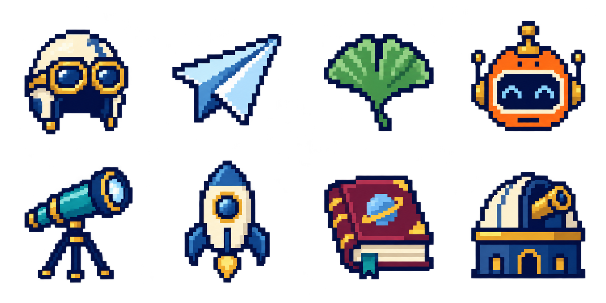
account-sheet-v1.png · 1774×887 原始生成母版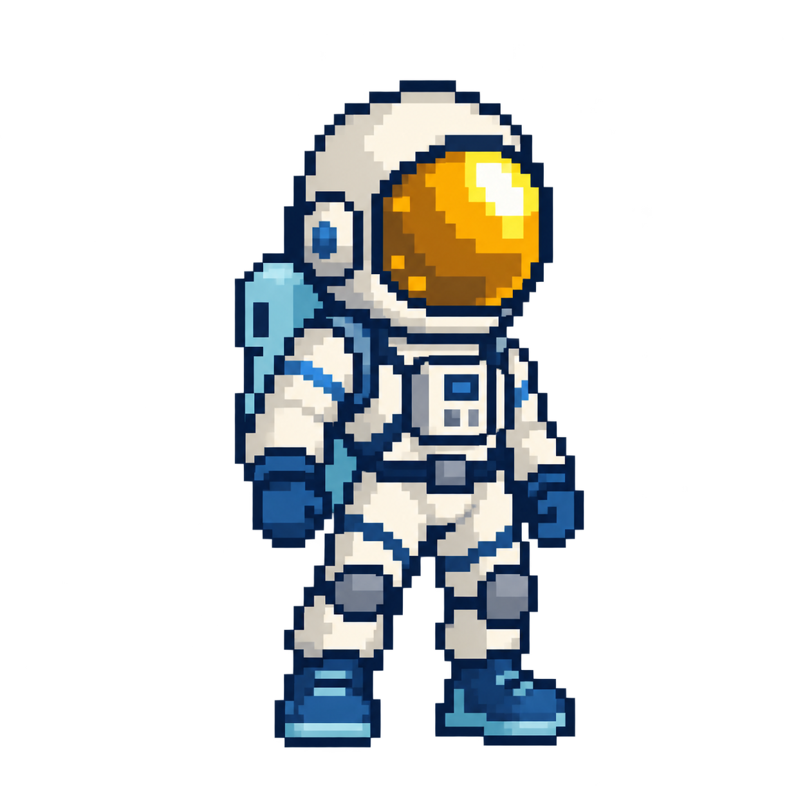
astronaut-v1.png · 1254×1254 原始生成母版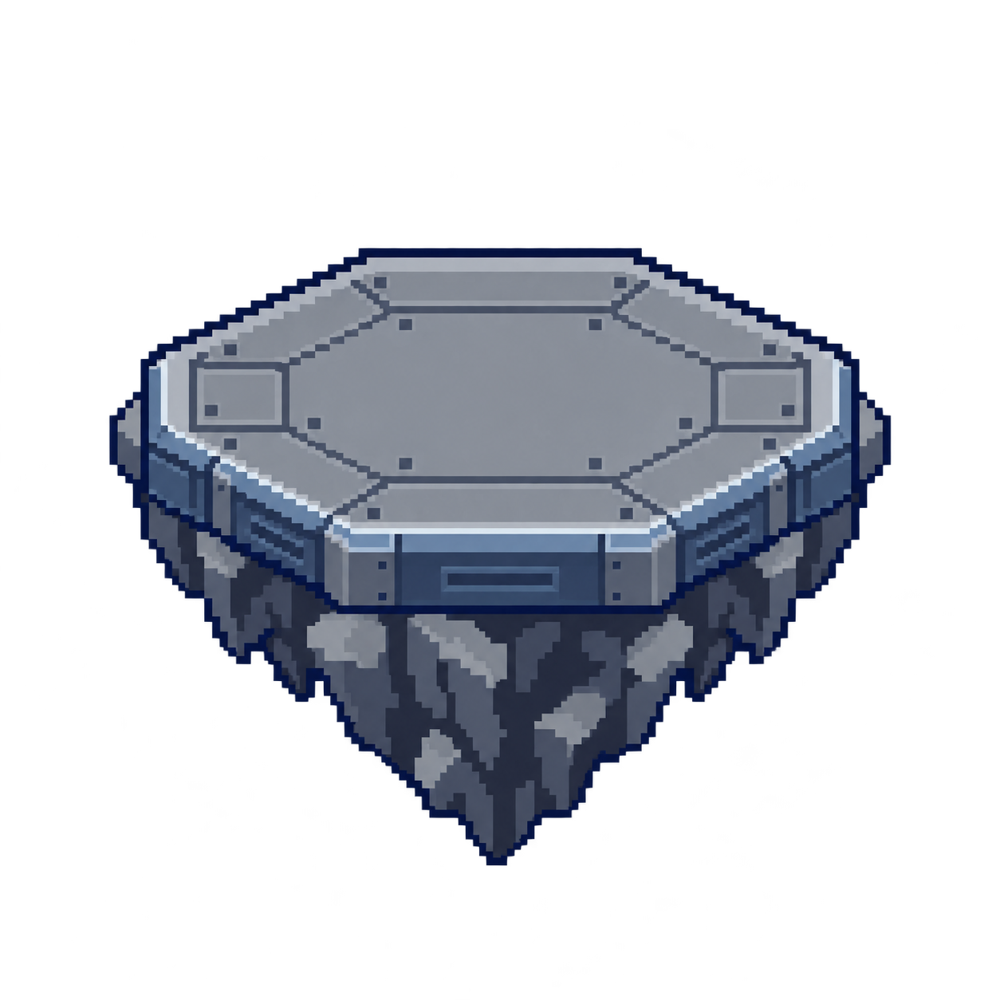
unknown-platform-v1.png · 1254×1254 原始生成母版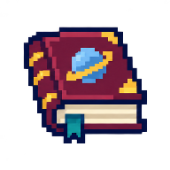
account-book-192.webp · 网页衍生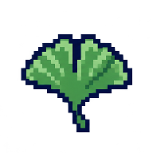
account-ginkgo-192.webp · 网页衍生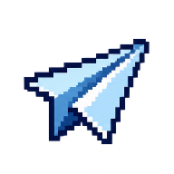
account-glider-192.webp · 网页衍生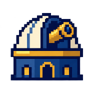
account-observatory-192.webp · 网页衍生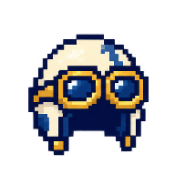
account-pilot-192.webp · 网页衍生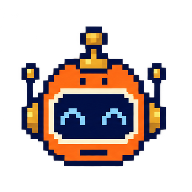
account-robot-192.webp · 网页衍生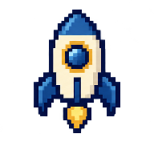
account-rocket-192.webp · 网页衍生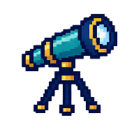
account-telescope-192.webp · 网页衍生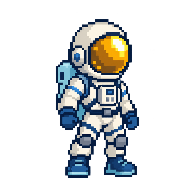
astronaut-192.webp · 网页衍生